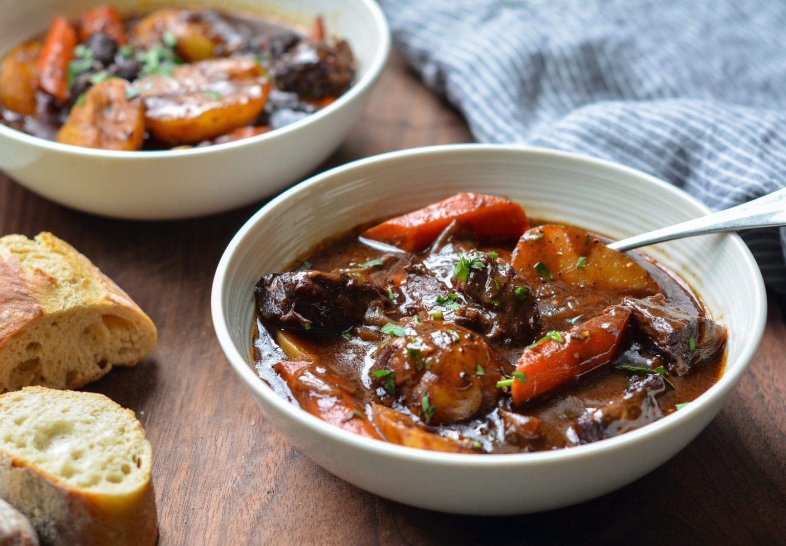

Beef Stew Recipe

Description
This classic French beef stew is the ultimate cold weather comfort food. After a few hours in the oven, the meat becomes meltingly tender and enveloped in a rich wine sauce.
Ingredients
- 3 lbs boneless beef chuck
- 2 tsps salt
- Freshly ground black pepper
- 2 medium yellow onions
Steps
- Preheat the oven to 325°F and set a rack in the lower middle position.
- at the beef dry and season with the salt and pepper. In a large Dutch oven or heavy soup pot, heat 1 tablespoon of the olive oil over medium-high heat until hot and shimmering. Brown the meat in 3 batches, turning with tongs, for about 5 minutes per batch; add one tablespoon more oil for each batch. (To sear the meat properly, do not crowd the pan and let the meat develop a nice brown crust before turning with tongs.) Transfer the meat to a large plate and set aside.
- Add the onions, garlic and balsamic vinegar; cook, stirring with a wooden spoon and scraping the brown bits from bottom of the pan, for about 5 minutes. Add the tomato paste and cook for a minute more. Add the beef with its juices back to the pan and sprinkle with the flour.